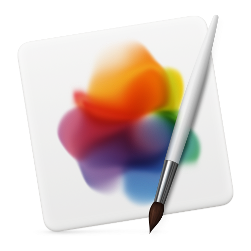

Muchos de nosotros hemos comprobado, y sufrido, cómo una página web con bastantes imágenes se ralentizaba o, como un mensaje de correo electrónico con un powerpoint de fotos adjunto, parecía que no se iba a descargar nunca.
Un concepto y expresión que usamos al hablar de imágenes es el de tamaño. Este término puede ocasionar confusión ya que solemos emplearlo para cosas diferentes: normalmente decimos que una imagen tiene un tamaño de 13 x 18 cm o 1024 x 768 píxeles, pero también decimos que una imagen tiene un tamaño de 3 Mbytes. Este uso impreciso de la palabra no suele causar mayores problemas, pero para los objetivos del curso sí que es importante matizar, ya que son dos características diferentes de una imagen.
De esta forma, en este tema, cuando hablemos del tamaño nos referiremos sólo a las dimensiones de la imagen: 13 x 18 cm, 1024 x 768 píxeles; y cuando se hable del espacio que ocupa la imagen en el dispositivo de almacenamiento –disco, memoria…- (3 Mbytes o 149 Kbytes) lo definiremos como peso.
JPG es un tipo de archivo que fue desarrollado por el Joint Photographic Experts Group (JPEG) para que fuese el estándar para las imágenes hechas por fotógrafos.
Para que el JPG tenga un tamaño reducido, el archivo comprime los datos de la imagen en bloques de píxeles, también conocidos como “mosaico”. El problema con esta comprensión es que es permanente porque se creó con la idea de guardar imágenes grandes en espacios de almacenamiento pequeños.
JPG se ha convertido en el tipo de archivo de imágenes más usado en Internet porque pueden ser comprimidas hasta 100 veces. Su popularidad comenzó cuando todavía se usaba dial-up para navegar, ya que las conexiones eran tan lentas, que esta era la única opción.
Ventajas y utilidades
• Formato comprimido.
• Puede ser comprimido hasta 100 veces.
• Mantiene una buena calidad tras la compresión.
• Posee una amplia gama de colores.
• Ideal para mostrar fotografías en la web dado que no suele ocupar mucho espacio.
Desventajas
• A pesar de que mantiene la calidad, cuenta con pérdidas.
• No soporta animaciones ni fondos transparentes.
• No es un formato multi-página.
• Genera pixelación aún configurándola con la mayor calidad.
• No es adecuado para ilustraciones, dibujos, ni textos.
➢ PNG
Formato desarrollado en buena parte para solventar las deficiencias del formato GIF. Permite almacenar imágenes con una mayor profundidad de contraste.
El PNG utiliza un algoritmo de compresión sin perdida, por lo que reconstruye los datos de manera exacta a los originales. El problema con PNG es que si se tiene una imagen con muchos colores y píxeles, obtendremos un archivo mucho más pesado que el JPG, por lo que no se usa con tanta frecuencia en Internet.
Ventajas y utilidades
• Formato comprimido.
• Sin pérdidas.
• Soporta millones de colores.
• Soporta fondos transparentes y semitransparentes.
• Ideal para el desarrollo de logotipos, botones y otro tipo de imágenes que necesiten conservar una buena resolución.
Desventajas
• No soporta animaciones.
• No es un formato multi-página.
• Imágenes con muchos elementos y colores pueden pesar mucho más que su equivalente en jpg.
• No admite modo CMYK.
• Incompatibilidad con navegadores antiguos.
➢ GIF
Se utilizan, normalmente, para crear animaciones o imágenes en movimiento.
La característica principal del GIF es que soporta paletas de 256 colores, y además de que soporta animaciones y transparencias. Esto no creará una distorsión de la imagen, como JPG, pero sí difuminará los colores bastante, haciendo que se vea ligeramente píxelado. Sin embargo, en una imagen GIF no se pierden líneas rectas como las del texto, como pasaría con un JPG.
Ventajas y utilidades
• No soporta animaciones.
• No es un formato multi-página.
• Imágenes con muchos elementos y colores pueden pesar mucho más que su equivalente en jpg.
• No admite modo CMYK.
• Incompatibilidad con navegadores antiguos.
Desventajas
• Baja calidad respecto a otros formatos.
• Limitada profundidad de color (8 bits).
• No es un formato multi-página.
Software para procesar imágenes
➢ Adobe Photoshop
Photoshop es, sin duda alguna, el programa de retoque fotográfico estrella. Se utiliza para modificar imágenes digitalizadas, como fotografías. También se usa para crear y editar fotos y gráficos. Existen muchas opciones que esta herramienta te permite editar, entre ellas están el color, la luz o el fondo entre muchos otros. Sistema operativo: Windows y Mac OSforma.
➢ Adobe Photoshop
• Soporta muchos tipos de archivos de imágenes, como JPG, PNG, GIF, y muchos más.
• Conjunto de múltiples capas, donde puedes modificar, transformar y distorsionar las imágenes.
• Permite el tratamiento extensivo de fotos como controlar y retocar el color.
• Dispone de varias herramientas mejoradas de autocorrección.
• Tiene un grupo de filtros de desenfoque que permite añadir diversos efectos borrosos.
• Detección de tonos de piel.
➢ GIMP

GIMP es posiblemente la mejor alternativa gratis, la más potente y profesional a Photoshop. Es un programa referente para retocar fotos por sus características
muy avanzadas. Ofrece una potente capacidad de manejar capas, filtros, ajustes de color, herramientas para dibujo o pintura, etc. Sistema operativo: Windows y
Mac OS
Características
• Tiene muchas herramientas para manipular los colores y el aspecto de las imágenes como el enfoque, eliminación de manchas, sombras, modificación de escala, etc.
• También es capaz de importar ficheros en pdf, así como imágenes vectoriales (svg).
• La imagen final puede guardarse en el formato original xcf de GIMP que soporta capas, o en un formato sin capas, que puede ser png, jpg, GIF, PDF.

➢ PIXELMATOR
Es un programa de edición de imágenes rápida y potente exclusiva para Mac y una de las alternativas más sólidas al Photoshop. Su funcionamiento es muy sencillo y su reducido precio lo hace muy apetecible si estás pensando comprar un programa de retoque de fotos. Sistema operativo: Mac OS.
Características
• Permite trabajar con diferentes capas y cuenta con una importante gama de filtros y efectos.
• Permite corregir el color, ajustando los niveles del brillo y el contraste.
• Precisas herramientas de selección.
• Posibilidades de difuminar bordes, eliminar arrugas o rayas, etc.
➢ Cellsea Free Web Photo Editor
Es una Cellsea Photo Editor es una herramienta online para hacer ediciones básicas de imágenes proveído por la gente de Cellsea, un sitio que tiene varias herramientas interesantes online. Este editor de imágenes online permite:
• Agregar texto
• Dibujar
• Redimensionar
• Recortar
• Rotar
• Balance de colores
• Efectos de distorsión
• Y varios efectos más.
La herramienta tiene una interfaz muy simple y liviana, no tiene cosas que carguen excesivamente y demoren las tareas, en la parte superior de la pantalla tenemos todos los botones para realizar las tareas, y algunos son desplegables, donde podemos ver las demás herramientas relacionadas.
Una vez que terminamos de editar nuestra imagen podemos guardarla ya procesad en nuestro equipo en diversis formatos disponibles, entre los cuales encontramos JPG, GIF, PNG, BMP, PNM y TIFF.herramienta online para hacer ediciones básicas de imágenes proveído por la gente de Cellsea, un sitio que tiene varias herramientas interesantes online
➢ Digital Image Tool
Digital Image Tool es una herramienta disponible sólo para Windows que sirve para la edición básica de fotos con varias operaciones como recortar, renombrar, redimensionar, rotar, entre otras. De uso bastante fácil, y totalmente gratuito. básica de fotos con varias operaciones como recortar, renombrar, redimensionar, rotar, entre otras. De uso bastante fácil, y totalmente gratuito.
Optimización de imágenes
Resolución
La resolución de una imagen indica la cantidad de detalles que puede observarse en esta. El término es comúnmente utilizado en relación a imágenes de fotografía digital, pero también se utiliza para describir cuán nítida (como antónimo de granular) es una imagen de fotografía convencional (o fotografía química). Tener mayor resolución se traduce en obtener una imagen con más detalle o calidad visual. Para las imágenes digitales almacenadas como mapa de bits, la convención es describir la resolución de la imagen con dos números enteros, donde el primero es la cantidad de columnas de píxeles (cuántos píxeles tiene la imagen a lo ancho) y el segundo es la cantidad de filas de píxeles (cuántos píxeles tiene la imagen a lo alto).
Es bueno señalar que si la imagen aparece como granular, se le da el nombre de pixelada. La convención que le sigue en popularidad es describir el número total de píxeles en la imagen (usualmente expresado como el múltiplo correspondiente a millón -mega-), que puede ser calculado multiplicando la cantidad de columnas de píxeles en una imagen, por la cantidad de filas.
Profundidad de color
La profundidad de color o bits por píxel (bpp) es un concepto de la computación gráfica que se refiere a la cantidad de bits de información necesarios para representar el color de un píxel en una imagen digital o en un framebuffer. Debido a la naturaleza del sistema binario de numeración, una profundidad de bits de n implica que cada píxel de la imagen puede tener 2n posibles valores y por lo tanto, representar 2n colores distintos.
Debido a la aceptación prácticamente universal de los octetos de 8 bits como unidades básicas de información en los dispositivos de almacenamiento, los valores de profundidad de color suelen ser divisores o múltiplos de 8, a saber 1, 2, 4, 8, 16, 24 y 32, con la excepción de la profundidad de color de 10 o 15, usada por ciertos dispositivos gráficos.
Al crear una página web interesa que los archivos que contienen las imágenes sean lo menos pesados posibles para agilizar su descarga y visualización por Internet.
El tamaño de un archivo gráfico viene determinado por las dimensiones de la imagen, su resolución, el número de colores y el formato (JPG, GIF, PNG).
Crea y guarda imágenes en resolución no superior a 72 ppp. Es la resolución que se suele usar en las pantallas de ordenador. No merece la pena optar por valores mayores ya que aumenta considerablemente el peso del archivo a descargar y el usuario no lo aprecia. Si la imagen se diseña para imprimir entonces debemos optar por una resolución entre 200-300 ppp.
En ocasiones puede interesar reducir el número de colores de la paleta porque ello supone reducir el tamaño del archivo.
Conviene utilizar un programa de edición gráfica para definir las dimensiones concretas de la imagen antes de insertarla en la página web.
Herramientas de optimización de imágenes
➢ Optimizar con Adobe Photoshop
El rey del retoque fotográfico nos ayuda con esta tarea de preparar nuestras imágenes para la web.
➢ Optimizar con Gimp
Es un programa libre y gratuito. Por ejemplo, nos sirve para edición de mágenes
digitales en forma de mapa de bits, tanto dibujos como fotografías.
➢ Compressor.io
Es una potente herramienta en línea para reducir drásticamente el tamaño de sus
imágenes y fotos. Por lo tanto se mantiene una alta calidad con casi ninguna
diferencia antes y después de la compresión
➢ Kraken.Io
Esta aplicación web nos ayuda a comprimir las imágenes manteniendo una
calidad sorprendente, una de las mejores alternativas gratuitas que podemos
tener.
➢ Resmush.it
ReSmush.it proporciona una optimización GRATIS de las imágenes, para los tipos
de archivo más estándar (PNG, JPG, GIF, BMP y TIF). Permite reducciones hasta el
80% mediante el uso de diferentes algoritmos.
➢ TinyPNG
Es una herramienta gratuita online que da la posibilidad de comprimir imágenes. No es necesario el registro,dicha aplicación web utiliza técnicas de compresión con pérdidas inteligentes para reducir el tamaño de archivo de tus archivos PNG.
Inclusión de imágenes en la web. Etiqueta <img>
Las imágenes son uno de los elementos más importantes de las páginas web. De
hecho, prácticamente todas las páginas web contienen alguna imagen y la mayoría
incluyen decenas de imágenes. Dentro de las imágenes que se pueden incluir en una
página HTML se deben distinguir dos tipos: las imágenes de contenido y las imágenes
de adorno.
Las imágenes de contenido son las que proporcionan información y complementan la
información textual. Las imágenes de adorno son las que se utilizan para hacer bordes
redondeados, para mostrar pequeños iconos en las listas de elementos, para mostrar
fondos de página, etc. Las imágenes de contenido se incluyen directamente en el código
HTML mediante la etiqueta <img> y las imágenes de adorno no se deberían incluir en el
código HTML, sino que deberían emplearse hojas de estilos CSS para mostrarlas. A
continuación se muestra la definición de la etiqueta <img>, utilizada para incluir las
imágenes en las páginas HTML: